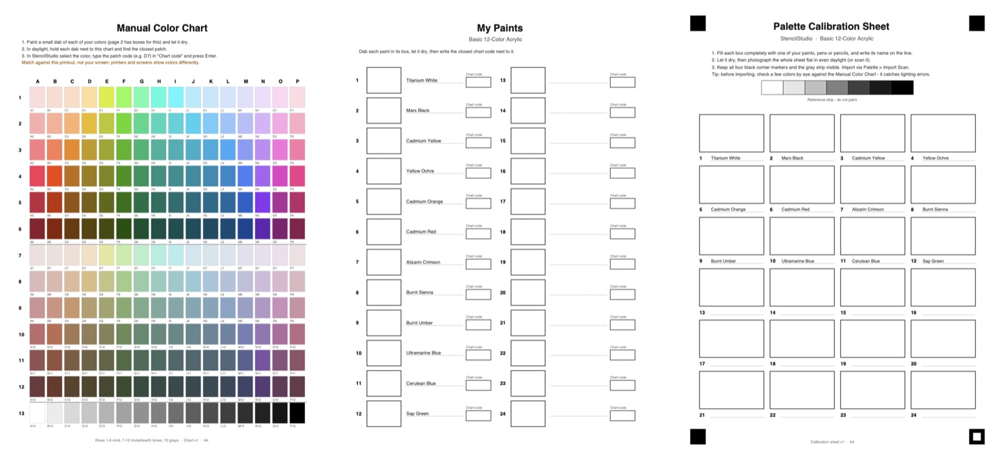
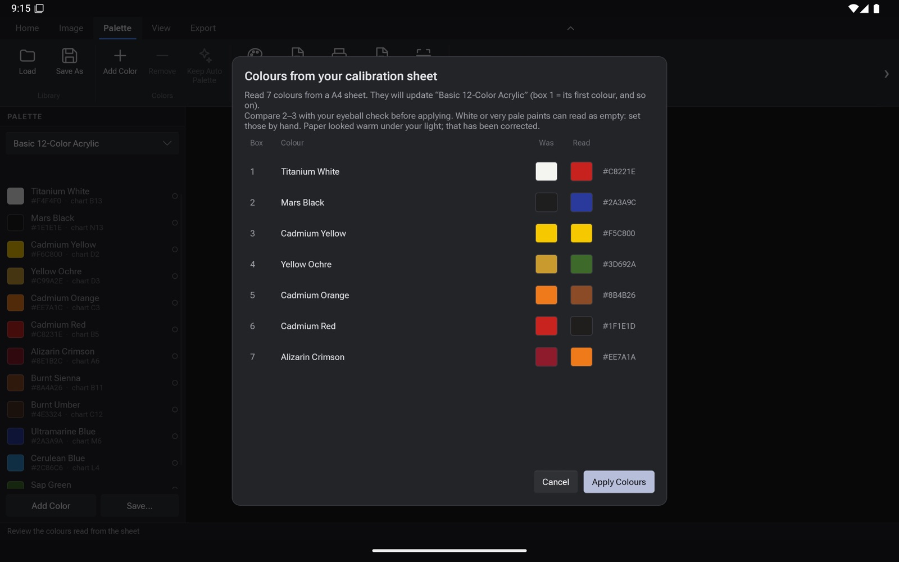
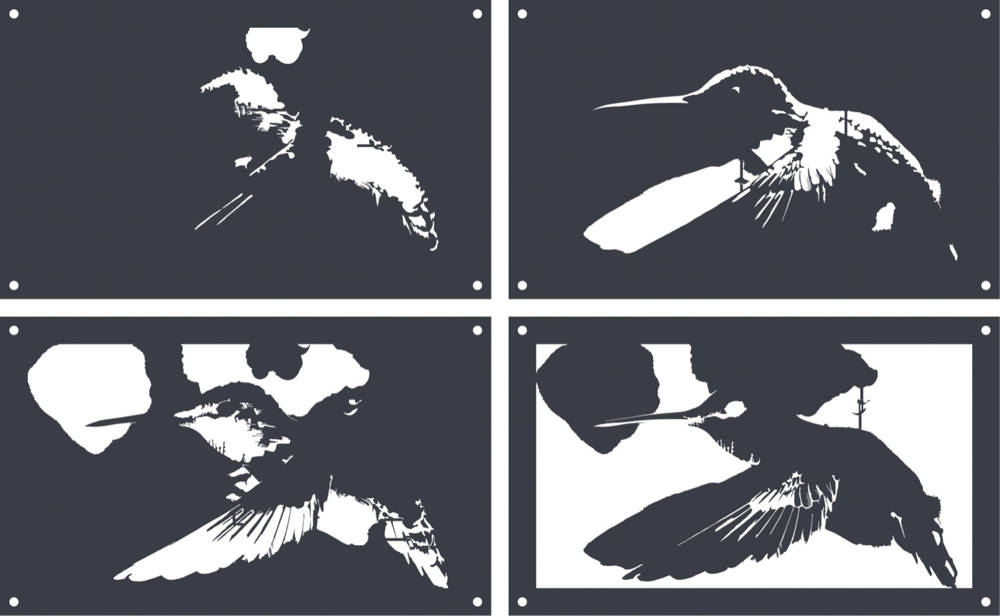
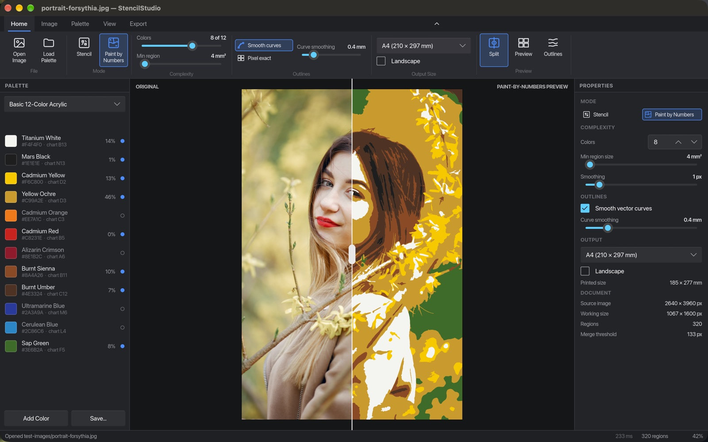
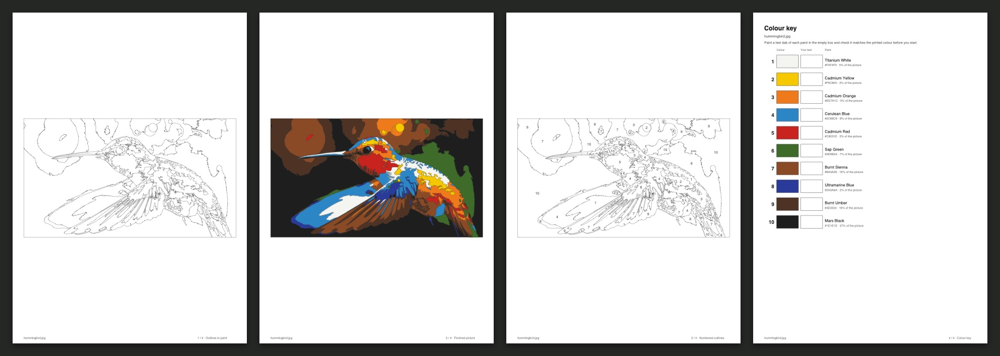

StencilStudio manual
Everything you need to turn a photo into cut-ready stencils or a paint-by-numbers kit, matched to the paints you own.
Getting startedQuick start
- Open a photo with Ctrl+O (⌘+O on a Mac). JPG, PNG and WebP are supported.
- Choose your paints. Pick a built-in palette, load your own, or let StencilStudio derive colours from the photo (Auto).
- Optionally remove the background with Remove BG so the subject gets all the colours.
- Choose a mode: Stencil makes one cut sheet per colour. Paint by Numbers makes an outline template.
- Tune it live. Change the number of colours, minimum region size and smoothing. The preview updates in about a tenth of a second.
- Export SVG or DXF for a laser or cutter, STL for a 3D printer, or a four-page PDF for paint by numbers.

Tip: do one eyeball check against the printed Manual Color Chart before importing a scan sheet. See Calibrating your paints.
OrientationThe interface
StencilStudio has a ribbon, menus and keyboard shortcuts, like a desktop design tool.
The ribbon
| Tab | What's on it |
|---|---|
| Home | Open Image, Load Palette, the mode switch (Stencil / Paint by Numbers), Remove BG and background colours, the colour-count and minimum-region sliders, outline style, curve smoothing, output paper size and the preview mode. |
| Image | Adjustments, pre-processing (smoothing) and colour matching, including Focus on subject. |
| Palette | The library, the list of colours, and the calibration tools: Manual Color Chart, Scan Sheet and Import Scan. |
| View | Preview mode, zoom and which panels are shown. |
| Export | Stencil sheet options (thickness, frame, registration holes), floating-piece bridging, and the export buttons for SVG, DXF, STL and the paint-by-numbers PDF packet. |
Collapse the ribbon with Ctrl+F1 for more room. The same actions are in the menu bar (File, Edit, View, Image, Help).
The three panels
- Palette (left): your colours, with each colour's nearest chart code and, after processing, how much of the picture it covers. A filled dot marks the colours in use. Toggle with Ctrl+Alt+L.
- Preview (middle): the picture in one of five views (below). Zoom with Ctrl+scroll and drag to pan.
- Properties (right): every setting for the current mode, the output size and document info. Toggle with Ctrl+Alt+R.
Preview views
| Key | View | Use it to… |
|---|---|---|
| Ctrl+1 | Original | See your photo as imported. |
| Ctrl+2 | Colour-reduced preview | See the picture as it will look in your paints. |
| Ctrl+3 | Cut / outline view | See exactly where cuts or lines will go. |
| Ctrl+4 | Split | Compare original and preview with a draggable divider. |
| Ctrl+5 | Stencil layers | Inspect each sheet and edit its bridges. |
The status bar shows the last processing time, the number of regions and the zoom level.
InputOpening a photo
Use Open Image (Ctrl+O) and choose a JPG, PNG or WebP. Large photos are fine: the live preview works at up to 1600 px on the long side, and exports are generated at up to 3000 px, from the full-size original.
On the desktop you can also pass an image on the command line, for example StencilStudio photo.jpg. On Android, Open Image offers the camera, the system Photos picker and the Files app. See Android.
Choosing a photo: a clear subject with good contrast gives the best stencils. Photos with a lot of fine, noisy detail need a larger minimum region size or fewer colours to stay cuttable.
ColourPalettes
A palette is the list of paints, pens or pencils you own. Colours are matched perceptually (CIELAB, with CIEDE2000 distance), not by raw RGB, so the result looks right to the eye.
Choosing and editing
- Built-in palettes: Basic 12-Color Acrylic, Black and White, and a 5-step Grayscale.
- Auto derives the colours from the photo itself.
- Load Palette (Ctrl+Shift+O) and Save Palette As (Ctrl+Shift+S) read and write palettes as JSON files.
- Add Color adds a paint to the palette, and Edit → Remove Selected Color removes the selected one.
How many colours, and which?
Set the number of colours with the Colors slider, or with Ctrl+] and Ctrl+[. StencilStudio then picks the subset of your palette that best reproduces the photo. It weighs the choice toward what you would notice:
- Vivid colours count more, so a red subject stays red rather than turning into a safe brown.
- Sharp, in-focus areas count more. Focus on subject is on by default (Image tab → Color Matching). A subject in front of a blurry background gets its colours first. Turn it off if you want every part of the picture weighted equally.
AccuracyCalibrating your paints
Paint on paper never looks quite like it does on a screen. StencilStudio offers two printable aids in the Palette tab (also under File → Calibration). They print on A4 or US Letter, following your selected paper size.

Manual Color Chart
This is the match-by-eye method, and the most trustworthy one.
- Choose Print Manual Color Chart (Ctrl+P). Page 1 has 208 colour patches with grid codes: six vivid rows, six muted and earth-tone rows, and a row of grays. Page 2, My Paints, has a box for each of your colours.
- Dab each paint in its box and let it dry.
- In daylight, hold each dab next to the chart and find the closest patch.
- In the app, select that colour in the palette, type the patch code (for example
D7) in the Chart field, and press Enter.
You match against the printout, not the screen, which removes most of the screen-versus-printer mismatch. The palette list also shows each colour's nearest chart code, so you can check existing colours at a glance.
Scan sheet import
The scan sheet reads many colours at once from a single photo or scan.
- Print the Scan Sheet, fill each box with one paint, and let it dry. Boxes are numbered in the same order as your palette.
- Do one eyeball check first. Compare two or three paints against the Manual Color Chart in daylight. The app reminds you once per session. Cameras and scanners shift colour with the light, and this one check catches it.
- Choose Import Scan and give it a photo (JPG, PNG or WebP), a scanner's or scanner app's PDF, or, on Android, use the camera directly.
- Review. Each box's colour is shown beside the palette colour it will replace. Choose Apply Colours when you're happy.

What the reader handles
- Corner markers: it finds the four markers by shape. The hollow one marks the bottom-right, so rotated and upside-down photos are fine.
- Perspective and paper: it corrects perspective and tells A4 from US Letter by itself.
- Colour: it uses the printed gray strip to remove colour casts and exposure errors.
In tests with a strong warm cast and a 90° rotation, colours came back within 1–2 RGB levels.
White and very pale paints can't be told apart from the paper, so they're reported as empty. Set those by hand. With the Auto palette selected, the scanned colours become a new palette called “Scanned paints”.
SubjectRemove background
Remove BG (Home tab, Image menu, or Ctrl+Shift+B) separates the subject from its background. Press it again to restore the background.

What changes
- Every colour goes to the subject. In a three-colour example the bird gets yellow, red and blue instead of spending a colour on a dark blurred background.
- The background is one flat area. It never becomes a stencil layer, and it stays a single region in paint by numbers. Paint it in your chosen colour first, or leave the surface bare.
Choosing the background colour
In the Background group, pick White, Black, one of three recommended paints from your palette (chosen to stand out from the subject's main colours), or Custom (hue, saturation and lightness sliders, or a hex code).
Subject detection
StencilStudio uses the best detector available on your device, and the status bar shows which one was used.
| Where | Detector |
|---|---|
| macOS 14 and later | Apple Vision, the same subject lifting used by Photos and Preview. About 0.2–0.3 s. |
| Android, Windows, Linux, older macOS | A bundled on-device model, U²-Net-p (4.6 MB, Apache-2.0). About 0.5 s on a laptop and about 1 s on a tablet, once per photo. |
| Fallback | A colour-model segmentation that needs no model. |
Either way, the detector's soft mask is snapped to the photo's real edges at full resolution, and exports use the same detection at export resolution. Nothing leaves your device. If the detector treats something in front of the subject as part of it, such as a branch held in front of a face, a brush to correct the mask is planned.
ControlsTuning the result
| Control | What it does |
|---|---|
| Colors | How many paints from your palette to use. |
| Min region | Areas smaller than this many mm² (measured at your chosen paper size) merge into a neighbour, so nothing is too small to cut or paint. Larger values give simpler, easier stencils. |
| Smoothing | A pre-blur in pixels that removes photo noise before colours are chosen. |
| Smooth curves / Pixel exact | Vector-smooth outlines or exact pixel outlines (used for paint-by-numbers). |
| Curve smoothing | How much outlines are rounded, in millimetres at the printed size, so the preview and the exported file match. |
| Output size | The paper (A4, A3, A5, US Letter, Tabloid, canvas and printer or laser bed sizes), and orientation. It sets the physical scale of everything. |
Tip: change the output size first. Region sizes are measured in millimetres, so a bigger sheet makes the same photo easier to cut.
ModeStencil mode
In Stencil mode, StencilStudio creates one sheet per colour. For each sheet, the solid material is the frame plus every other colour, and the cut-outs are where this colour goes. Stack the sheets, lightest first, and paint through each one.

Outlines are true vector curves. Each border between two colours is smoothed once and shared by both sides, so neighbouring shapes always meet exactly. There are no slivers or gaps between layers.
Every layer gets a solid frame (12 mm by default) and four round registration holes in the same place on every sheet. Push pins or dowels through them to line the layers up as you paint.
Layers view and editing bridges
Layers (Ctrl+5, or Preview → Layers) shows each sheet exactly as it will be cut. Pick a layer from the chips at the top.

- What you see: cut-outs in the layer's paint colour on the sheet material. Automatic bridges are blue, bridges you added are green, and anything still floating is red.
- Click a bridge to remove it.
- Click inside a cut to add a bridge across it at that spot. It runs horizontally or vertically, whichever is shorter, to the material on both sides. Clicking works with a finger too.
- Undo with Ctrl+Z (redo with Ctrl+Shift+Z). Reset bridges returns the layer to automatic.
- Exports match. Edits are stored in millimetres on the sheet, so SVG, DXF and STL contain exactly what you see.
Floating pieces and bridges
Some cut-outs leave a piece of sheet with nothing holding it, like the centre of an “O” or the pupil of an eye. That piece would fall out. StencilStudio handles each one by its size:
- Large enough pieces are held by two thin bridges on opposite sides. Each bridge is a straight strip to the nearest solid material, left-right or up-down, whichever is shorter.
- Tiny pieces (below Drop pieces under, 6 mm² by default) are dropped, which simply makes that spot part of the paint area.
- Mid-size pieces are also dropped when their bridges would be much longer than the piece itself, instead of being held by long, spindly strips. Pieces of 100 mm² or more are always kept.
Bridge width (default 1.2 mm), the drop size and an on/off switch live in Export → Floating Pieces and in the Properties panel. After each export, the status bar reports how many pieces were bridged and how many were dropped.
OutputExporting stencils
Export writes one file per colour, lightest first, named <name>-L<n>-<color>.<ext>. Exports are generated from the full-size original at up to 3000 px, which is finer than the preview.

| Format | For | Details |
|---|---|---|
| SVG | Laser and vinyl cutters | Millimetre units, red 0.01 mm hairline cuts, a blue engraved layer label, and Inkscape layers named Cut and Engrave. |
| DXF | Laser, CNC, CAD | AutoCAD R12 for the widest compatibility, in millimetres, with CUT and ENGRAVE layers. |
| STL | 3D printing | Watertight, manifold sheets at the thickness you choose (0.6–3 mm, for example 0.8, 1 or 2 mm). |
Set the sheet thickness, frame width and registration holes in Export → Stencil Sheet. Use Ctrl+E to export SVG quickly.
ModePaint by numbers
Paint-by-numbers mode (Ctrl+Alt+P) uses the same colour engine and minimum-region rules, so every cell is big enough to paint. Outlines can be smooth vector curves or pixel-exact.

The PDF packet
Export → PDF Packet (Ctrl+Shift+E) saves a four-page PDF on your chosen paper size:
- Outlines to paint: light gray lines only, with no numbers.
- Finished picture: every area filled with its paint, as a reference.
- Numbered outlines: each area carries its paint number, placed at the point deepest inside the shape and sized to fit.
- Colour key: number, printed colour, an empty box for a test dab of your paint, the paint name, its hex code and how much of the picture it covers.

Paint a dab in each empty box and compare it with the printed colour before you start. Numbers run lightest to darkest, the same order as the stencil layers. A removed background is numbered too, unless it's white, in which case it's just the paper.
Very small areas get a small number (down to about 3.5 pt). If a number feels too tight, raise Min region or lower the colour count and export again.
MobileAndroid
StencilStudio runs on Android tablets and foldables (Android 10 and later, arm64). It has the same ribbon with touch on top: two-finger pinch to zoom, drag to pan, and keyboard shortcuts when a keyboard is attached.
- Open Image and Import Scan offer Camera…, the system Photos picker (no permission needed), Browse Files… (the Files app, including Drive and other providers), and a quick list of recent images in Pictures, DCIM, Download and Documents. Android asks for photo access the first time you use that list.
- Printing opens the Android print dialog, where you can choose any printer or Save as PDF.
- Saving a chart, sheet or packet stores it in Documents/StencilStudio and opens it in your PDF viewer. Stencil exports go to the same folder.
- The desktop menu bar is hidden, because everything is in the ribbon. On narrow screens, use the ‹ › buttons to scroll the ribbon.
ReferenceKeyboard shortcuts
Ctrl is ⌘ on macOS. The full list is under Help → Keyboard Shortcuts (Ctrl+/).
| Keys | Action |
|---|---|
| Ctrl+O | Open image |
| Ctrl+Shift+O | Load palette |
| Ctrl+Shift+S | Save palette |
| Ctrl+E | Export stencil layers (SVG) |
| Ctrl+Shift+E | Export the paint-by-numbers PDF |
| Ctrl+P | Print the manual colour chart |
| Ctrl+1 / 2 / 3 / 4 | Original / Preview / Outlines / Split |
| Ctrl+5 | Stencil layers (click to add or remove bridges) |
| Ctrl+Z / Ctrl+Shift+Z | Undo / redo a bridge edit |
| Ctrl+= / Ctrl+- | Zoom in / out (or Ctrl+scroll at the cursor) |
| Ctrl+0 | Fit to window |
| Ctrl+Alt+0 | Actual pixels |
| Ctrl+] / Ctrl+[ | More / fewer colours |
| Ctrl+Shift+B | Remove / restore the background |
| Ctrl+Alt+S / P | Stencil / Paint-by-Numbers mode |
| Ctrl+Alt+L / R | Toggle the palette / properties panel |
| Ctrl+F1 | Collapse the ribbon |
| Drag | Pan the canvas |
HelpFAQ & troubleshooting
Is my photo uploaded anywhere?
No. StencilStudio runs entirely on your device. Subject detection uses Apple Vision on macOS, or a small model bundled inside the app. There is no account and no cloud processing.
The colours on screen don't match my paints.
That's expected: paint on paper never looks like it does on a display. Print the Manual Color Chart and match your dried paint to a patch by eye, then enter the code. See Manual colour chart.
Why did a small piece disappear from a layer?
Pieces below Drop pieces under (6 mm² by default), and mid-size pieces that would need very long bridges, are dropped so the sheet stays strong. That spot simply becomes part of the paint area. Lower the drop size, or raise the sheet size, to keep more.
A piece of my stencil is floating or falls out.
Turn on Bridge floating pieces in Export → Floating Pieces, or open the Layers view and click inside the cut to add a bridge by hand. Floating pieces show in red.
The background removal included something it shouldn't.
The detector counts anything in front of the subject as part of it, such as a branch held before a face. A brush to correct the mask is planned. For now, try another photo or crop, or turn Remove BG off.
Import Scan says it couldn't find the corner markers.
Make sure all four corner markers are in the frame, the page is flat and well lit, and the photo is in focus. Rotation and tilt are fine. Shadows across a marker can confuse it.
My white paint shows as empty after a scan import.
White and very pale paints can't be told apart from the paper. Set their colours by hand in the palette.
The first launch on a Mac is blocked.
Early builds are ad-hoc signed and not notarised. Right-click the app and choose Open the first time. Store releases are planned.
Which operating systems are supported?
macOS (universal, Apple Silicon and Intel) and Android tablets and foldables are available in early access. iPhone and iPad, Windows and Linux are coming.
Under the hoodHow the engine works
- The image is downscaled to at most 1600 px for the live preview (3000 px for export) and optionally pre-blurred.
- A 5-bit-per-channel histogram is converted to CIELAB.
- Palette selection picks the k colours from your palette that minimise the pixel-weighted CIEDE2000 error (greedy plus swap refinement), with chroma-weighted saliency. Auto mode runs weighted k-means++ instead.
- With Remove background, a subject mask is estimated first (Apple Vision or U²-Net-p, edge-refined with colour models). Background pixels are left out of the histogram and become one extra “Background” region that is never a layer.
- Pixels are mapped to the chosen colours and labelled into 4-connected regions. Regions smaller than the minimum size merge into the neighbour they share the longest border with.
- Vectorisation: region borders are split into chains between junctions. Each chain is Gaussian-smoothed once with its ends pinned, so every outline built from them shares identical edges.
- Stencil sheets: for each colour, solid material is the frame plus every other colour. Floating pieces are bridged or dropped, then the outlines are merged with the bridges using a robust polygon union.
- Writers produce SVG, DXF, binary STL and the PDF packet from the same geometry.
StencilStudio is written in Rust, with the UI built in Slint. The core engine has no UI dependencies.
Designed and built by Devesh Rai. Subject detection uses Apple Vision on macOS and U²-Net-p (Apache-2.0) elsewhere.